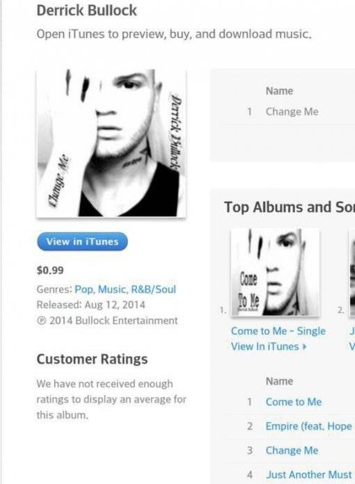
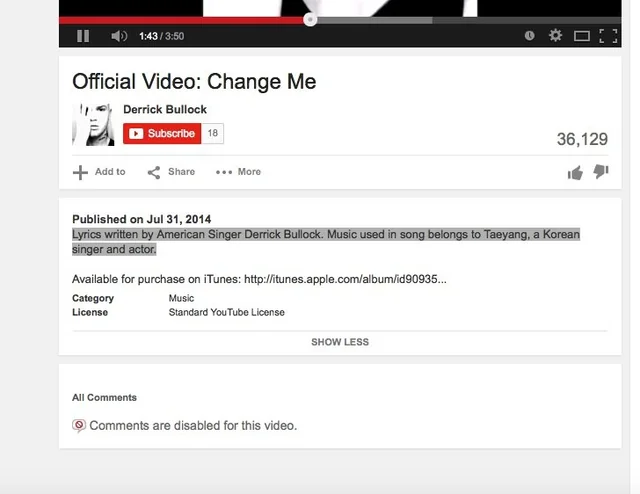

抄袭事件
2015年1月5日
美国业余歌手 Derrick Bullock 声称太阳的歌曲《Eyes, Nose, Lips》抄袭了他自己的歌曲《Change Me》
他强烈声明这首歌是他自己的作品，还声称这首歌是被人“窃取”的
歌曲《Change Me》
图片翻译：Derrick Bullock的这首单曲（与普遍认知相反，它创作于四年前）的资料和视频记录可以追溯到2008年，记录了我创作这首歌的过程。这首歌不属于任何韩国乐队——它四年前被盗用，并在韩国的音乐作品中使用。在你指责Derrick盗用这首歌之前，请先搞清楚事实。视频和书面资料可以证明所有版权均归Derrick Bullock所有
详细资讯： @bbttrflly
两首歌曲的时间线
2014年6月3日：太阳的《Eyes, Nose, Lips》以数字形式发行
2014年6月10日：歌曲《Eyes, Nose, Lips》收录于RISE的实体专辑中
2014年7月11日： YG发布了歌曲《Eyes, Nose, Lips》的官方伴奏版本
2014年7月31日：Derrick Bullock将歌曲《Eyes, Nose, Lips》上传至YouTube
2014年8月12日：Derrick Bullock将歌曲《Eyes, Nose, Lips》上传至iTunes

有人向Koreaboo爆料她通过 Google + 联系到了Derrick Bullock，但他似乎也自相矛盾
他先前说这首歌在4年前（2010-2011 年）在韩国使用，然后又说他从 2008年（7 年前）开始创作这首歌。但他现在又说这首歌是他5年前在学校里写的
详细资讯： @bbttrflly
图片翻译：这首歌是我五年前在学校创作的，所有文件都能证明。如果有人要被告，那也是你们那个男团成员盗用了我的音乐，不是我。不过还是谢谢
如果他有文件证明这首歌是他多年前创作的，但他至今仍未出示这些文件。如果他能提供合法的文件，整件事就能就此了结，YG娱乐和太阳或许会面临相应的后果
2015年1月5日
YG娱乐公司发表声明：我们已了解此事，并正在内部进行处理
2015年1月10日
YG娱乐公司表示：过去几天，我们注意到Derrick Bullock未经许可使用了歌曲《Eyes, Nose, Lips》，并就此事向Derrick Bullock和发布该歌曲的音乐网站提出了强烈抗议。我们将更加努力，防止此类事件再次发生
Derrick Bullock的经纪公司称，在版权许可方面存在“意外疏忽”，而这位美国艺术家也对抄袭争议表示“歉意”
详细资讯： Soompi

2016年12月28日
俄罗斯歌手 Albina Dzhanabaeva 的歌曲《I Love You》涉嫌抄袭太阳的歌曲《Eyes, Nose, Lips》
歌曲《I Love You》
此视频是重新在俄罗斯视频平台 Rutube 上传的
- 建议观看评论区
但 Albina 表示她的歌曲与太阳的歌曲并不相似，她说：那些歌跟我的风格并不相似。而且我发现了一位新的歌手，我之前根本不认识他。最终是否相似可以由法院来裁定
详细资讯： Allkpop
有俄罗斯网友作出两个歌曲视频对比
2017年1月5日
宝莱坞歌曲印度歌曲《Zaalima》，被收录进在2017年上映的电影《Raees》却被指责抄袭太阳的歌曲《Eyes, Nose, Lips》
歌曲《Zaalima》是 Pritam 作曲，由著名歌手 Arijit Singh 演唱
Pritam 以使用韩国电影原声带作为自己歌曲的旋律而闻名，但这次歌曲《Zaalima》却没有注明太阳或Teddy Park
歌曲《Zaalima》01:35 开始
国际和印度歌迷都对这两首歌进行了评价，并建议YG娱乐公司采取相应的法律行动，但YG尚未对这次抄袭指控发表评论
详细资讯： hellokpop
网友作出两个歌曲视频对比